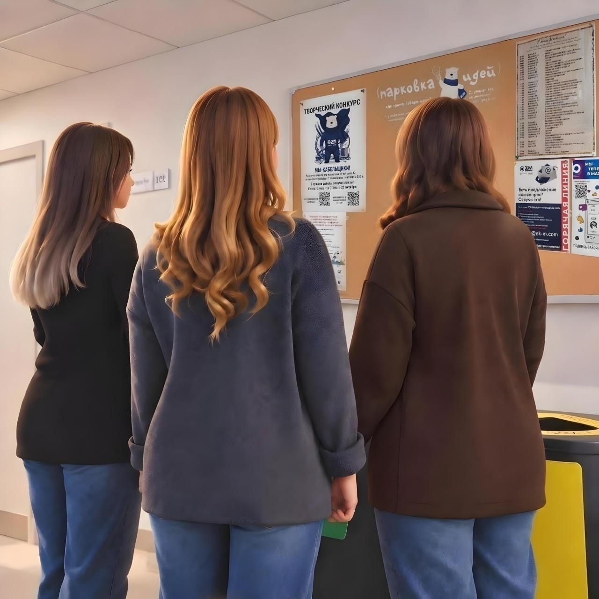
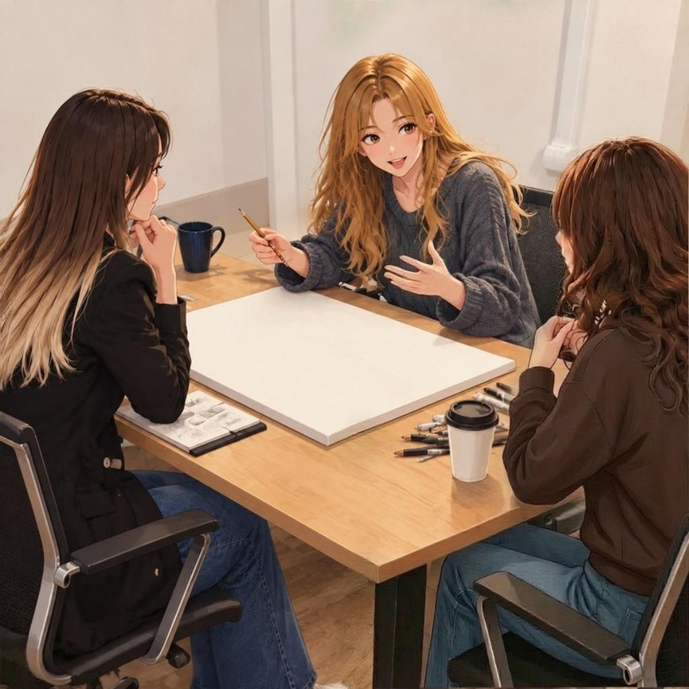
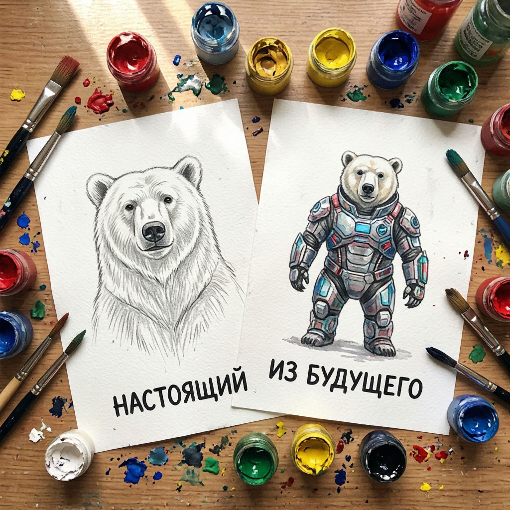
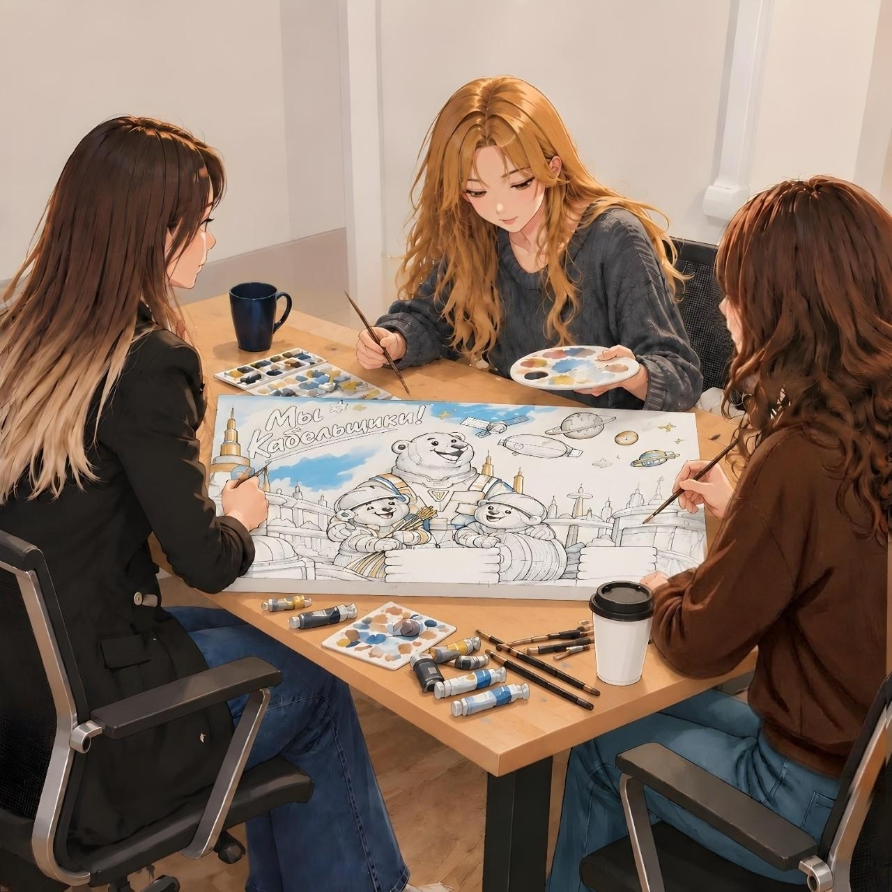
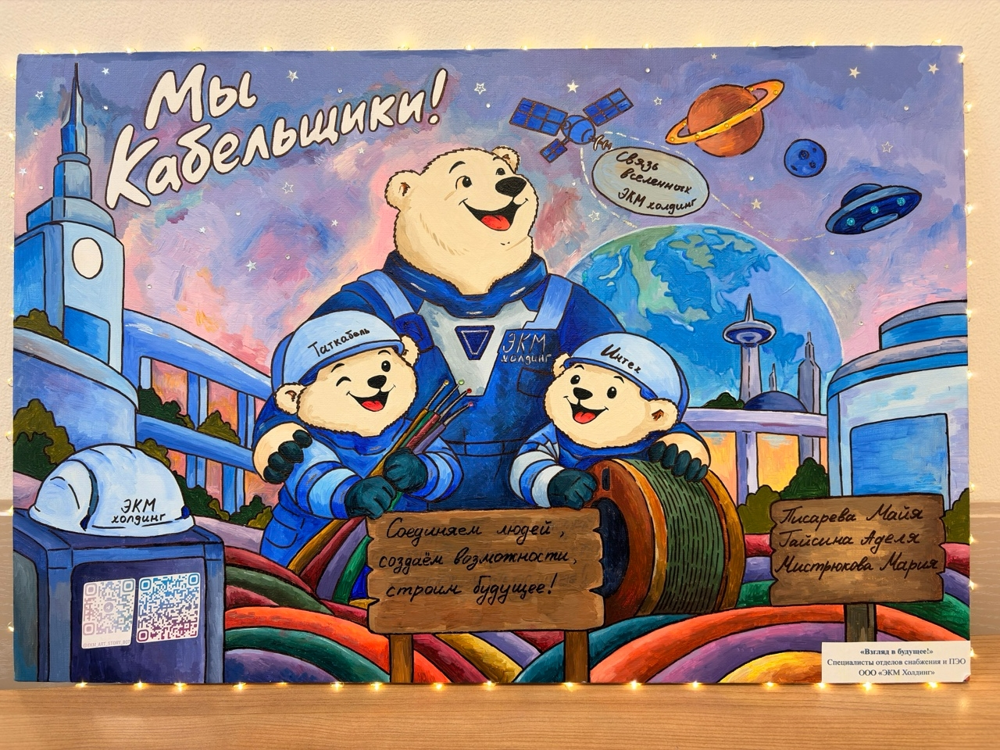
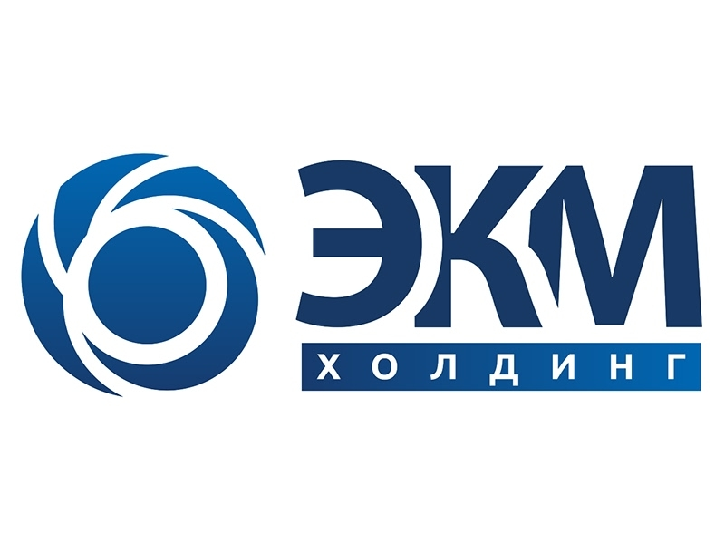
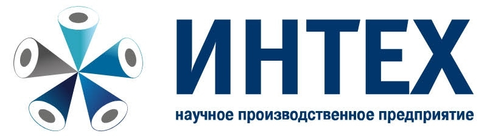
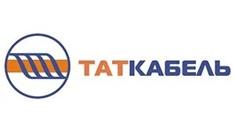

Всё началось с конкурса «Мы — кабельщики». Майя затянула Аделю, Аделя — Марию. Мы планировали просто поучаствовать, но не учли одного: у нас слишком много амбиций.

Всё началось с конкурса «Мы — кабельщики». Майя затянула Аделю, Аделя — Марию. Мы планировали просто поучаствовать, но не учли одного: у нас слишком много амбиций.

Мы пытались уместить в один холст и реальность, и будущее, но риск перегрузить его деталями был огромен. Мария была нашим компасом, и её требование «глубокого смысла» стало для нас настоящим вызовом. Мы спорили до хрипоты, отсекая всё лишнее. В приоритете был не просто результат, а совершенство, открывающее путь к победе.

Переломный момент случился вечером, когда офис опустел. Аделя достала свои секретные эскизы, сделанные в моменты самых жарких сомнений. Именно тогда к нам пришло озарение: зачем пытаться совместить две эпохи в один кадр, если можно заявить о самом важном? Мы решили не дробить внимание зрителя, а направить его в одну точку — в саму суть будущего.

Здесь наше творчество превратилось в слаженный механизм.
Майя создала на холсте безупречные цветовые переходы и буквально вдохнула в него жизнь; Мария придумала, как «продать» шедевр зрителям — не навязчиво, а по-настоящему ценно, а Аделя превратила эту задумку в технологичное приключение, соединив искусство с цифровым миром через QR-код.

Мы отказались от попыток запечатлеть настоящее, потому что наш вектор направлен на будущее. Перед вами — наше видение. Масштабная, смелая и яркая вселенная, которую мы создали вместе.


